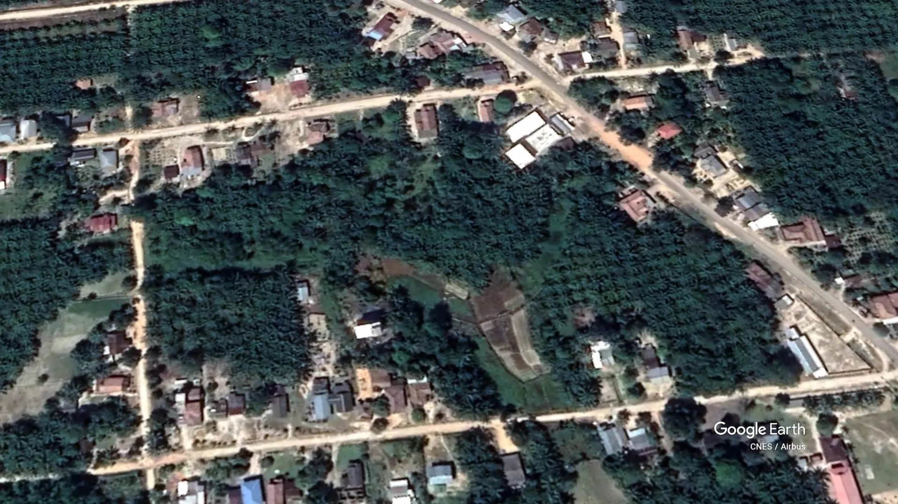

Mengenal Wilayah Desa Bina Bhakti
Luas Wilayah
Ketinggian Wilayah
Suhu Maksimum
Curah Hujan
Nanga BulikKecamatan Bulik
Desa Tri TunggalKecamatan Sematu Jaya
Desa PurwarejaKecamatan Sematu Jaya
Desa Purwareja Kecamatan Sematu Jaya Desa Kujan Kecamatan Bulik